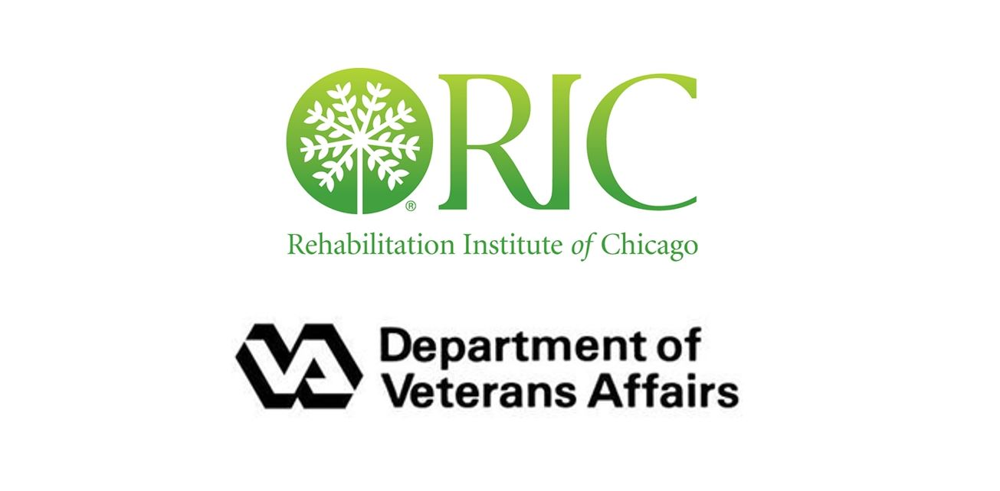

Interactive Prosthesis Training Research
Carnegie Mellon's Human-Computer Interaction Institute aims to create technology that improves human capabilities, goals, and environments through interdisciplinary research. I spent three semesters working with and leading projects in the Lab for Interactive Computer Systems within the HCII, focusing on improving the prosthesis training experience for upper limb extremity (hand, forearm) amputees through technology.
Carnegie Mellon's Human-Computer Interaction Institute aims to create technology that improves human capabilities, goals, and environments through interdisciplinary research. I spent three semesters working with and leading projects in the Lab for Interactive Computer Systems within the HCII, focusing on improving the prosthesis training experience for upper limb extremity (hand, forearm) amputees through technology.
- Role
- User Research, VR Product Design,
Team Management - Date
- January 2017 - May 2018
- Location
- Pittsburgh, PA
Intro
"How might we make pre-prosthesis training more engaging for patients and easier to quantify and monitor for clinicians?"
To be eligible for a robotic prosthetic, patients must achieve muscle control benchmarks with their affected limb. Because they can't recieve visual control feedback from an amputation, traditional rehab is extremely frustrating. To address this, we investigate interactive games and experiences as a way to simulate prosthesis and provide more effective, user-centric rehab.
Collaborations
This project invovled effort from multiple parties; specifically, the Rehabilitation Institute of Chicago which assisted in the hardware development and clinical testing plans, and the VA in San Antonio which provided user perspectives.

Understanding Users and the Space
To effectively introduce new technology into the rehab process, we set out to fully understand the clinical space and the profiles of our potential users. Preliminary research helped us uncover sources of patient discontent and recognize ineficiencies in the clinical worflow, including poorly designed training materials and an inability for clinicians to quantify rehab progress.
A key aspect of this space is the form and function of the robotic prosthetics available to amputees. Digging deep into the interactions amputees have with these prosthetics allowed us to build more robust user profiles and to design technology which reflected commercial devices.
To effectively introduce new technology into the rehab process, we set out to fully understand the clinical space and the profiles of our potential users. Preliminary research helped us uncover sources of patient discontent and recognize ineficiencies in the clinical worflow, including poorly designed training materials and an inability for clinicians to quantify rehab progress.
A key aspect of this space is the form and function of the robotic prosthetics available to amputees. Digging deep into the interactions amputees have with these prosthetics allowed us to build more robust user profiles and to design technology which reflected commercial devices.
Prototyping Games & Experiences
We explored two types of games and experiences to train patients to perform controlled muscle contractions; simple games which could be played on a mobile device, and immersive virtual reality experiences which simulated real-world interactions. Patients use the myoelectric signals in their affected limb to interact with the games and experiences, just as they would use the signals to control a prosthetic.
I worked between our software engineering team and clinical partners to represent the patient voice and ensure that our technology met the needs of the clinician. Focusing on features such as real time feedback, clear visualization of success and failure, and easy access to logged data, I began as an individual contributor and eventually took over as the lead for our virtual reality platform built in Unity and run on the Vive.
From a high level, the experiences utilize a robust virtual hand model which behaves as a prosthetic would, allowing users to simulate prosthesis and retrain their muscles. One particularly succesful prototype was our VR shopping experience, in which a patient could simulate using their prosthetic to gather items in a grocery store. This experience did an excellent job exercising the desired muscle contractions and balancing the desire for user engagement with the need to quell difficulty.
Because the products are still in the R&D phase, I cannot demonstrate them here, but please reach out if you have questions!
Deliverables
3 VR Experiences, 7+ Mobile Games
We explored two types of games and experiences to train patients to perform controlled muscle contractions; simple games which could be played on a mobile device, and immersive virtual reality experiences which simulated real-world interactions. Patients use the myoelectric signals in their affected limb to interact with the games and experiences, just as they would use the signals to control a prosthetic.
I worked between our software engineering team and clinical partners to represent the patient voice and ensure that our technology met the needs of the clinician. Focusing on features such as real time feedback, clear visualization of success and failure, and easy access to logged data, I began as an individual contributor and eventually took over as the lead for our virtual reality platform built in Unity and run on the Vive.
From a high level, the experiences utilize a robust virtual hand model which behaves as a prosthetic would, allowing users to simulate prosthesis and retrain their muscles. One particularly succesful prototype was our VR shopping experience, in which a patient could simulate using their prosthetic to gather items in a grocery store. This experience did an excellent job exercising the desired muscle contractions and balancing the desire for user engagement with the need to quell difficulty.
Because the products are still in the R&D phase, I cannot demonstrate them here, but please reach out if you have questions!
Deliverables
3 VR Experiences, 7+ Mobile Games
Presentation & Future Opportunities
I had the opportunity to represent my group at Carnegie Mellon's research symposium, where I was recognized by the Osher Lifelong Learning Institute for best presentation in projects focused on advancing healthcare.
The group will be launching deep studies with eligible amputees and collaborating further with our clinical partners to refine the technology and collect new data. We're looking forward to seeing the progress (hopefully in time for the next symposium!)
Final Thoughts
Reflection
Being in a true research setting, there were many new tasks which I stepped up to own. Because I said yes to what needed to be done, I picked up a lot of new skills in research study design and report preparation which have ultimately served me well since.
Takeaways
When I joined the group I had never been a user researcher before or worked with software products. I sought mentorship to build my knowledge, and worked hard to prove myself. Fast forward two semesters, leading the group was validation that I had earned the trust of my team.